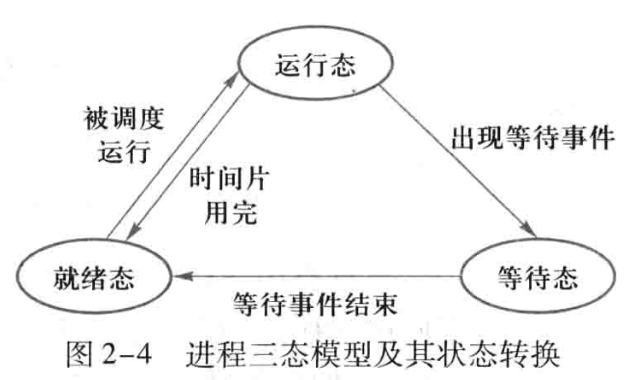
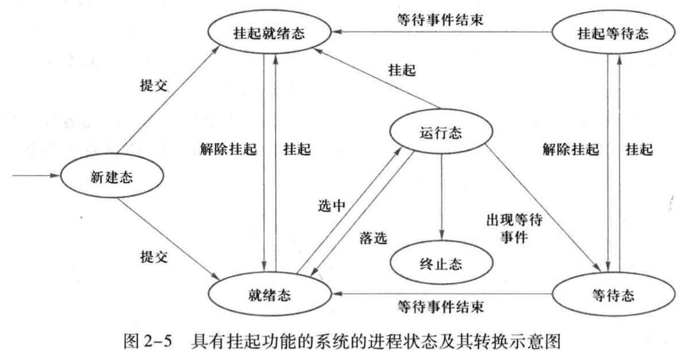
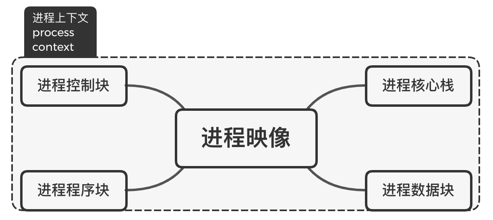
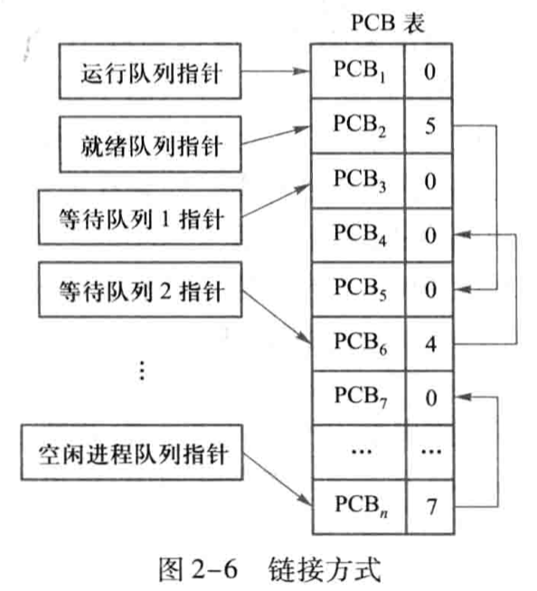
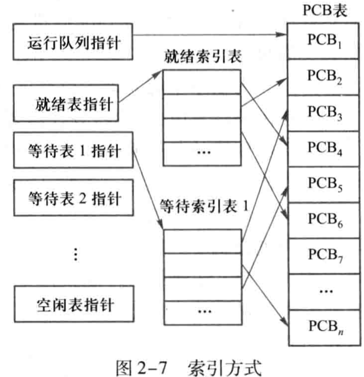
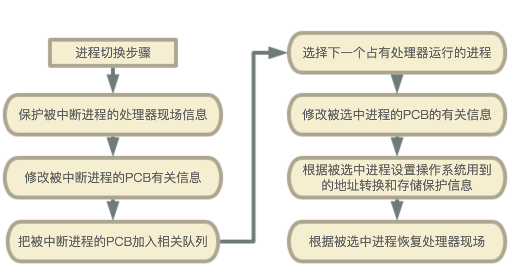
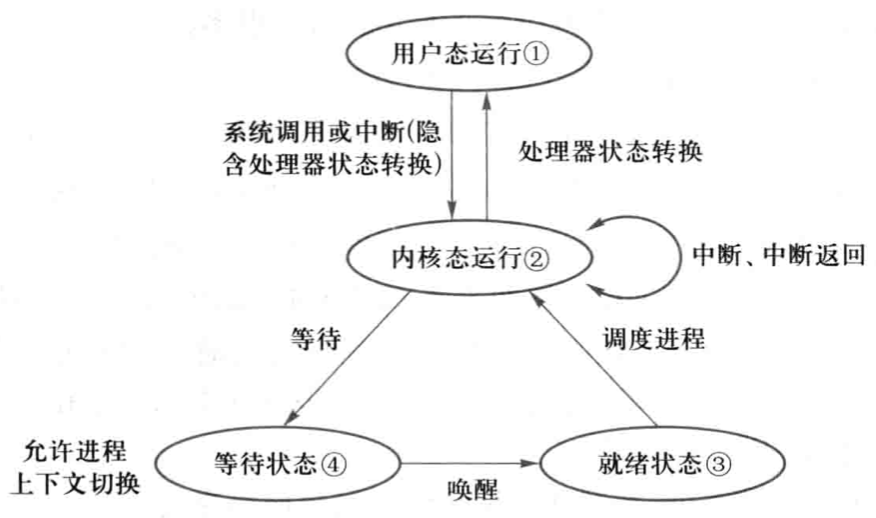

<!DOCTYPE html>
<html>
<head><meta name="generator" content="Hexo 3.8.0">
  <!-- hexo-inject:begin --><!-- hexo-inject:end --><meta charset="utf-8">
  

  
  <title>OS--处理器管理（3）_进程及其实现 | DongXuehui&#39;s Blog</title>
  <meta name="viewport" content="width=device-width, initial-scale=1, maximum-scale=1">
  <meta name="description" content="OS—处理器管理（3）_进程及其实现知识点：  进程定义和属性 进程状态和转换 进程描述和组成 进程上下文切换与处理器状态转换 进程控制和管理  进程的定义和属性“进程“是操作系统中最重要最基本的概念，在多道程序系统提出后，为了刻画系统内部动态状况，描述运行程序活动规律而提出的新概念。 从原理角度来看，进程是支持程序执行的一种系统机制，是对处理器上运行程序的活动规律的抽象； 从现实角度看，进程是一">
<meta name="keywords" content="操作系统">
<meta property="og:type" content="article">
<meta property="og:title" content="OS--处理器管理（3）_进程及其实现">
<meta property="og:url" content="http://dongxh.cn/2020/04/02/OS-处理器管理（3）-进程及其实现/index.html">
<meta property="og:site_name" content="DongXuehui&#39;s Blog">
<meta property="og:description" content="OS—处理器管理（3）_进程及其实现知识点：  进程定义和属性 进程状态和转换 进程描述和组成 进程上下文切换与处理器状态转换 进程控制和管理  进程的定义和属性“进程“是操作系统中最重要最基本的概念，在多道程序系统提出后，为了刻画系统内部动态状况，描述运行程序活动规律而提出的新概念。 从原理角度来看，进程是支持程序执行的一种系统机制，是对处理器上运行程序的活动规律的抽象； 从现实角度看，进程是一">
<meta property="og:locale" content="zh-CN">
<meta property="og:image" content="http://dongxh.cn/2020/04/02/OS-处理器管理（3）-进程及其实现/1.png">
<meta property="og:image" content="http://dongxh.cn/2020/04/02/OS-处理器管理（3）-进程及其实现/2.png">
<meta property="og:image" content="http://dongxh.cn/2020/04/02/OS-处理器管理（3）-进程及其实现/3.png">
<meta property="og:image" content="http://dongxh.cn/2020/04/02/OS-处理器管理（3）-进程及其实现/4.png">
<meta property="og:image" content="http://dongxh.cn/2020/04/02/OS-处理器管理（3）-进程及其实现/5.png">
<meta property="og:image" content="http://dongxh.cn/2020/04/02/OS-处理器管理（3）-进程及其实现/6.png">
<meta property="og:image" content="http://dongxh.cn/2020/04/02/OS-处理器管理（3）-进程及其实现/7.png">
<meta property="og:updated_time" content="2020-04-04T04:52:45.933Z">
<meta name="twitter:card" content="summary">
<meta name="twitter:title" content="OS--处理器管理（3）_进程及其实现">
<meta name="twitter:description" content="OS—处理器管理（3）_进程及其实现知识点：  进程定义和属性 进程状态和转换 进程描述和组成 进程上下文切换与处理器状态转换 进程控制和管理  进程的定义和属性“进程“是操作系统中最重要最基本的概念，在多道程序系统提出后，为了刻画系统内部动态状况，描述运行程序活动规律而提出的新概念。 从原理角度来看，进程是支持程序执行的一种系统机制，是对处理器上运行程序的活动规律的抽象； 从现实角度看，进程是一">
<meta name="twitter:image" content="http://dongxh.cn/2020/04/02/OS-处理器管理（3）-进程及其实现/1.png">
  
    <link rel="alternate" href="/atom.xml" title="DongXuehui&#39;s Blog" type="application/atom+xml">
  
  
    <link rel="icon" href="/favicon.png">
  
  
    <link href="//fonts.googleapis.com/css?family=Source+Code+Pro" rel="stylesheet" type="text/css">
  
  <link rel="stylesheet" href="/css/style.css"><!-- hexo-inject:begin --><!-- hexo-inject:end -->
</head>
</html>
<body>
  <!-- hexo-inject:begin --><!-- hexo-inject:end --><div id="container">
    <div id="wrap">
      <header id="header">
  <div id="banner"></div>
  <div id="header-outer" class="outer">
    <div id="header-title" class="inner">
      <h1 id="logo-wrap">
        <a href="/" id="logo">DongXuehui&#39;s Blog</a>
      </h1>
      
    </div>
    <div id="header-inner" class="inner">
      <nav id="main-nav">
        <a id="main-nav-toggle" class="nav-icon"></a>
        
          <a class="main-nav-link" href="/">Home</a>
        
          <a class="main-nav-link" href="/archives">Archives</a>
        
      </nav>
      <nav id="sub-nav">
        
          <a id="nav-rss-link" class="nav-icon" href="/atom.xml" title="RSS Feed"></a>
        
        <a id="nav-search-btn" class="nav-icon" title="搜索"></a>
      </nav>
      <div id="search-form-wrap">
        <form action="//google.com/search" method="get" accept-charset="UTF-8" class="search-form"><input type="search" name="q" class="search-form-input" placeholder="Search"><button type="submit" class="search-form-submit">&#xF002;</button><input type="hidden" name="sitesearch" value="http://dongxh.cn"></form>
      </div>
    </div>
  </div>
</header>
      <div class="outer">
        <section id="main"><article id="post-OS-处理器管理（3）-进程及其实现" class="article article-type-post" itemscope itemprop="blogPost">
  <div class="article-meta">
    <a href="/2020/04/02/OS-处理器管理（3）-进程及其实现/" class="article-date">
  <time datetime="2020-04-02T08:17:21.000Z" itemprop="datePublished">2020-04-02</time>
</a>
    
  <div class="article-category">
    <a class="article-category-link" href="/categories/Operating-System/">Operating System</a>
  </div>

  </div>
  <div class="article-inner">
    
    
      <header class="article-header">
        
  
    <h1 class="article-title" itemprop="name">
      OS--处理器管理（3）_进程及其实现
    </h1>
  

      </header>
    
    <div class="article-entry" itemprop="articleBody">
      
        <h1 id="OS—处理器管理（3）-进程及其实现"><a href="#OS—处理器管理（3）-进程及其实现" class="headerlink" title="OS—处理器管理（3）_进程及其实现"></a>OS—处理器管理（3）_进程及其实现</h1><p>知识点：</p>
<ul>
<li>进程定义和属性</li>
<li>进程状态和转换</li>
<li>进程描述和组成</li>
<li>进程上下文切换与处理器状态转换</li>
<li>进程控制和管理</li>
</ul>
<h2 id="进程的定义和属性"><a href="#进程的定义和属性" class="headerlink" title="进程的定义和属性"></a>进程的定义和属性</h2><p>“进程“是操作系统中最重要最基本的概念，在多道程序系统提出后，为了刻画系统内部动态状况，描述运行程序活动规律而提出的新概念。</p>
<p>从<strong>原理角度</strong>来看，进程是支持程序执行的一种系统机制，是对处理器上运行程序的活动规律的抽象；</p>
<p>从<strong>现实角度</strong>看，进程是一种数据结构，用来准确刻画运行程序的状态和系统动态变化状况；</p>
<p>引入进程的两个目的：</p>
<ol>
<li>刻画程序的并发性；</li>
<li>解决资源的共享性<br>“可再入”程序指的是能够被多个程序同时调用的程序；“可再用”程序是指在被调用的过程中可以有自身修改，在调用它的程序退出之前不允许其他程序来调用。</li>
</ol>
<p>引入进程的概念后，程序与程序的执行（计算)不再一一对应。</p>
<p><strong>定义：进程是既能描述程序的并发执行，又能共享系统调用资源的一个基本单位。</strong>（操作系统要为引入进程而付出（进程占用的）空间和（进程调度的）时间的代价）。<strong>进程是具有独立功能的程序在某个数据集合上的一次运行活动，也是操作系统进行资源分配和保护的基本单位</strong>。</p>
<p>进程的属性：</p>
<ol>
<li>动态性。<br>因为进程是一次执行过程，具有生命周期，具有动态概念。</li>
<li>共享性。<br>同义程序同时运行在不同的数据集合上时构成不同进程，即多个不同进程可执行相同的程序。</li>
<li>独立性<br>每个进程是操作系统中的一个独立实体，有自己的虚存空间，程序计数器和内部状态。</li>
<li>制约性<br>进程因为共享资源或者协同工作产生相互制约关系，造成进程执行速度的不可预测性，必须对进程的执行次序或相对执行速度加以协调。</li>
<li>并发性<br>进程在时间上可以重叠，单处理器系统中并发执行，多处理器系统中可以并行执行。</li>
</ol>
<h2 id="进程的状态和转换"><a href="#进程的状态和转换" class="headerlink" title="进程的状态和转换"></a>进程的状态和转换</h2><h4 id="三态模型"><a href="#三态模型" class="headerlink" title="三态模型"></a>三态模型</h4><p>正如上面所说的，由于进程的动态性，为了便于管理，我们按照进程在执行过程中的不同情况，至少给其定义三种进程状态：</p>
<ol>
<li>运行态（running）：进程占有处理器正在运行的状态</li>
<li>就绪态（ready）：进程具备运行条件，等待系统分配处理器以便运行的状态</li>
<li>等待态（wait）：又称阻塞态（blocked）或者睡眠态（sleep），指进程不具备运行条件，正在等待某个事件完成的状态。</li>
</ol>
<p>处于运行态的进程个数不能大于处理器个数。</p>
<p></p>
<h4 id="七态模型"><a href="#七态模型" class="headerlink" title="七态模型"></a>七态模型</h4><p>有时为了便于管理，会引进新的状态：</p>
<ol>
<li>新建态（new）：进程被创建时的状态，尚未进入就绪队列。</li>
<li>终止态（exit）：进程完成任务到达正常结束点，或者出现无法克服的错误而异常终止，或被操作系统及有终止权的进程所终止时所处的状态。不再被调度，等待被撤销。</li>
<li>挂起态（suspend）：当系统资源尤其是内存资源已经不能满足进程运行的要求时，必须把某些进程挂起，<strong>对换到磁盘对换区中</strong>，释放占用的某些资源，暂时不参与低级调度，还有很多原因，</li>
</ol>
<p></p>
<p>挂起就绪态（ready suspend）表明进程具备运行条件，但目前在外存中，只有当它被对换到内存才能被调度执行；</p>
<p>挂起等待态（blocked suspend）表明进程正在等待某一个事件发生且也在外存中。</p>
<p>在一个实际的操作系统中，为了方便管理和调度往往设置多种进程状态。如Linux主要的进程状态有5种。</p>
<h2 id="进程的描述和组成"><a href="#进程的描述和组成" class="headerlink" title="进程的描述和组成"></a>进程的描述和组成</h2><h4 id="进程映像"><a href="#进程映像" class="headerlink" title="进程映像"></a>进程映像</h4><p></p>
<ul>
<li>进程映像：进程某时刻的内容和状态集合。<ul>
<li>进程控制块：存储进程标志信息、现场信息和控制信息。</li>
<li>进程程序块：被进程执行的程序。</li>
<li>进程核心栈：用来保存中断/异常现场，保存内核函数调用的参数、局部变量和返回地址。</li>
<li>进程数据块：进程的私有地址空间，存放各种私有数据，包括用户栈。</li>
</ul>
</li>
</ul>
<p>进程上下文（process context）：进程物理实体和支持进程运行的环境。如硬件寄存器、程序状态字寄存器、支持动态地址转换的页表和相关的核心数据结构。</p>
<p>当系统调度新进程占有处理器时，新老进程随之发生上下文切换。进程的运行被认为是在上下文中执行。</p>
<p>进程上下文组成：</p>
<ol>
<li>用户级上下文（user level context）：由程序块、数据块、共享内存区、用户栈组成，占用进程的虚存空间。</li>
<li>系统级上下文（register context）：有进程控制块、内存管理信息、核心栈等操作系统管理进程所需要的信息组成。</li>
<li>寄存器上下文（system level context）：由处理器状态寄存器、指令计数器、栈指针、通用寄存器等组成。</li>
</ol>
<h4 id="进程控制块"><a href="#进程控制块" class="headerlink" title="进程控制块"></a>进程控制块</h4><p>每个进程有且仅有一个程序控制块（Process Control Block , PCB）,或称进程描述符（process descriptor），是进程存在的唯一标识。是操作系统用于记录和刻画进程状态及有关信息的数据结构。也是操作系统掌握进程的唯一资料结构，它包括进程执行时的情况，以及进程让出处理器后所处的状态、断点等信息。</p>
<p>PCB包含以下三类信息</p>
<ol>
<li>标识信息。用于唯一地标识一个进程，分为用户使用的外部标识符和系统使用的内部标识号。</li>
<li>现场信息。用于保留进程在运行时存放在处理器现场中的各种信息。</li>
<li>控制信息。用于管理和调度进程。</li>
</ol>
<p><strong>PCB是操作系统中最重要的数据结构，它包含管理进程所需要的全部信息。</strong></p>
<p>PCB的集合实际上定义了一个操作系统当前的状态，其使用权和修改权均属于操作系统。操作系统根据PCB对并发执行的进程进行控制和管理，进程借助于PCB才能被调度执行。</p>
<h4 id="进程队列及其管理"><a href="#进程队列及其管理" class="headerlink" title="进程队列及其管理"></a>进程队列及其管理</h4><p>把<strong>处于同一状态</strong>的所有进程的PCB链接在一起的数据结构称为<strong>进程队列（process queue）</strong>。通常有两种组织队列的方式：</p>
<p><strong>链接方式</strong></p>
<p>对于同一状态进程的PCB，通过PCB中的链接指针将其链接成队列，单向指针和双向指针都可以。单向队列编号为0排在队尾；双向队列对于后向指针来说编号为0在队尾，对于前向指针，编号为0在前面</p>
<p>不同状态的进程可以排成不同的队列，如运行队列，就绪队列和等待队列等。运行队列通常只有一个进程；就绪队列可以按照优先级或者FCFS（First Come First Serve）的原则排队，也可以按照进程的优先级高低分成多个就绪队列；等待队列通常有多个，对应不同的等待状态，如等待I/O操作完成，等待信号量等。此外还可以将空闲PCB结构链接成自由队列以便使用。</p>
<p>当某个事件发生，状态发生改变时，有个进程会出队，有的进程会进队。处理器调度中负责进程入队和出队工作的功能模块称为<strong>队列管理模块</strong>，其任务就是对进程的PCB重新排队并修改其状态和相应链接结构。</p>
<p></p>
<p><strong>索引方式</strong></p>
<p>索引方式利用索引表记录不同状态进程的PCB地址或者在PCB表中的编号，系统建立不同状态的索引表，各个索引表在内存中的起始位置放在内核占用指针单元中。</p>
<p></p>
<h2 id="进程上下文切换于处理器状态转换"><a href="#进程上下文切换于处理器状态转换" class="headerlink" title="进程上下文切换于处理器状态转换"></a>进程上下文切换于处理器状态转换</h2><h4 id="进程上下文切换"><a href="#进程上下文切换" class="headerlink" title="进程上下文切换"></a>进程上下文切换</h4><p><strong>中断和异常是激活操作系统的仅有方法。</strong>这里说的激活操作系统的意思是指让操作系统内核获得处理器控制权，也就是进入内核态。因为只有操作系统有权利使用修改进程PCB，所以<strong>进程切换必定发生在内核态而非用户态</strong>。</p>
<p></p>
<p>思考题：程序状态字PSW和进程控制块PCB的区别？</p>
<p><strong>进程上下文切换时机</strong></p>
<p>内核中不能立即进行调度和切换的情况有：内核正在处理中断的过程中，进程运行在内核临界区中，内核处在需要屏蔽中断的原子操作中。</p>
<p>如果在上述过程中产生引起调度的条件而不能马上进行调度和切换，系统采用将请求调度标志延迟到敏感性操作完成后再进行。</p>
<p>为此，Linux在进程<code>task_struct</code>中设计了重调度标志<code>need_resched</code>,V２.６版中，被移至<code>thread_info</code> 结构体中，用标志<code>TIF_NEED_RESCHED</code> 表示 。调度时机：</p>
<ol>
<li>主动调度：指调用<code>schedule()</code>函数来释放CPU,引起新一轮调度，通常发生在当前进程状态被改变,如:执行了<code>read()</code>、<code>write()</code>、<code>exit()</code>等系统调用，导致进程终止、进程阻塞等。</li>
<li>被动调度：指发生了引起调度的条件, 这时仅置进程<code>TIF_NEED_RESCHED</code>调度标志。调度标志设置有以下四种情况：<ol>
<li>时钟中断中调用函数<code>scheduler_tick()</code>，查看当前进程的时间片是否耗尽，如果是，则设置重调度标志；</li>
<li>函数<code>try_to_wake_up( )</code>将阻塞的进程唤醒，把它加入运行队列时，如果其优先级比当前正在运行进程的优先级高，设置重调度标志。</li>
<li>设置应用进程优先级参数nice值、创建新进程、SMP负载均衡时都可能使高优先级进程进入就绪状态，也可能设置重调度标志；</li>
<li>执行<code>sched_setscheduler( )</code>（设置调度策略）、<code>sched_yield</code>( 暂时让出处理器)、<code>pause( )</code>（暂停）等系统调用，均要设置重调度标志。</li>
</ol>
</li>
</ol>
<p>每当中断处理和系统调用处理结束返回时，在<code>ret_from_sys_call</code>代码段中会主动测试调度标志，若置位则调用<code>schedule()</code>函数.</p>
<h4 id="处理器状态转换"><a href="#处理器状态转换" class="headerlink" title="处理器状态转换"></a>处理器状态转换</h4><p>步骤：</p>
<ol>
<li>保存被中断进程的处理器现场信息；</li>
<li>处理器从用户态转换到核心态，以便执行服务程序或中断处理程序；</li>
<li>如果处理中断，可根据规定的中断级设置中断屏蔽位；</li>
<li>根据系统调用号或中断号，从系统调用表或中断入口表找到服务程序或中断处理程序地址。</li>
</ol>
<p>处理器上执行进程的活动范围必在以下四个情况下：</p>
<ol>
<li>用户空间中，处于进程上下文，用户进程在运行，使用用户栈。</li>
<li>内核空间中，处于进程上下文，内核代表某进程在运行，使用核心栈。</li>
<li>内核空间中，处于中断上下文，与任何进程无关，中断服务程序正在处理特定中断，Intel x86未提供中断栈，借用核心栈。</li>
<li>内核空间中，内核线程(无用户地址空间的进程)运行于内核态。</li>
</ol>
<h4 id="Linux中进程上下文切换"><a href="#Linux中进程上下文切换" class="headerlink" title="Linux中进程上下文切换"></a>Linux中进程上下文切换</h4><p></p>
<h2 id="进程控制和管理"><a href="#进程控制和管理" class="headerlink" title="进程控制和管理"></a>进程控制和管理</h2><p>原语是在操作系统中调用核心层子程序的指令。与一般广义指令的区别在于它是<strong>不可中断</strong>的，而且总是作为一个基本单位出现。它与一般过程的区别在于：它们是“原子操作”（primitive or atomic action）。所谓原子操作，是指一个操作中的所有动作要么全做，要么全不做。换言之，它是一个不可分割的基本单位，因此，在执行过程中不允许被中断。<strong>原子操作在管态下执行，常驻内存</strong>。原语的作用是为了实现进程的通信和控制，系统对进程的控制如不使用原语，就会造成其状态的不确定性，从而达不到进程控制的目的</p>
<p>进程管理原语</p>
<h4 id="进程创建"><a href="#进程创建" class="headerlink" title="进程创建"></a>进程创建</h4><ol>
<li>在进程列表中增加一项，从PCB池中申请一个空闲PCB，为新进程分配惟一的进程标识符；</li>
<li>为新进程的进程映像分配地址空间，以便容纳进程实体。进程管理程序确定加载到进程地址空间中的程序；</li>
<li>为新进程分配除主存空间外的其他各种所需资源；</li>
<li>初始化PCB，如进程标识符、处理器初始状态、进程优先级等；</li>
<li>把新进程状态置为就绪态，并移入就绪进程队列；</li>
<li>通知操作系统的某些模块，如记账程序、性能监控程序。</li>
</ol>
<h4 id="进程撤销"><a href="#进程撤销" class="headerlink" title="进程撤销"></a>进程撤销</h4><ol>
<li>根据撤销进程标识号，从相应队列中找到并移出它；</li>
<li>将该进程拥有的资源归还给父进程或操作系统；</li>
<li>若该进程拥有子进程，先撤销它的所有子进程，以防它们脱离控制；</li>
<li>回收PCB，并归还到PCB池。</li>
</ol>
<h4 id="进程阻塞"><a href="#进程阻塞" class="headerlink" title="进程阻塞"></a>进程阻塞</h4><ol>
<li>停止进程执行，保存现场信息到PCB；</li>
<li>修改进程PCB有关内容，如进程状态由运行态改为等待态等，并把修改状态后的进程移入相应事件的等待队列中；</li>
<li>转入进程调度程序去调度其他进程运行。</li>
</ol>
<h4 id="进程唤醒"><a href="#进程唤醒" class="headerlink" title="进程唤醒"></a>进程唤醒</h4><ol>
<li>从相应的等待队列中移出进程；</li>
<li>修改进程PCB的有关信息，如进程状态改为就绪态，并移入就绪队列；</li>
<li>若被唤醒进程比当前运行进程优先级高，重新设置调度标志。</li>
</ol>
<h4 id="进程的挂起"><a href="#进程的挂起" class="headerlink" title="进程的挂起"></a>进程的挂起</h4><ol>
<li>检查要被挂起的进程的状态</li>
<li>若处于活动就绪态，则修改为挂起就绪态</li>
<li>若处于等待态，则修改为挂起等待态</li>
<li>被挂起的进程PCB的非常驻部分要交换到磁盘对换区</li>
</ol>
<h4 id="进程的激活"><a href="#进程的激活" class="headerlink" title="进程的激活"></a>进程的激活</h4><ol>
<li>把被挂起进程PCB的非常驻部分掉入内存</li>
<li>修改为对应的状态（等待或者就绪）</li>
<li>将进程移入相应队列中</li>
</ol>
<p>挂起原语既可由自己也可由其他进程调用，而激活原语只能由其他进程调用。</p>

      
    </div>
    <footer class="article-footer">
      <a data-url="http://dongxh.cn/2020/04/02/OS-处理器管理（3）-进程及其实现/" data-id="ck8l56qju000ytmlk2l2hj39p" class="article-share-link">Share</a>
      
      
  <ul class="article-tag-list"><li class="article-tag-list-item"><a class="article-tag-list-link" href="/tags/操作系统/">操作系统</a></li></ul>

    </footer>
  </div>
  
    
<nav id="article-nav">
  
    <a href="/2020/04/03/OS-处理器管理（4）-线程及其实现/" id="article-nav-newer" class="article-nav-link-wrap">
      <strong class="article-nav-caption">Newer</strong>
      <div class="article-nav-title">
        
          OS--处理器管理（4）_线程及其实现
        
      </div>
    </a>
  
  
    <a href="/2020/03/30/OS-处理器管理（1）-中断技术/" id="article-nav-older" class="article-nav-link-wrap">
      <strong class="article-nav-caption">Older</strong>
      <div class="article-nav-title">OS--处理器管理（2）_中断技术</div>
    </a>
  
</nav>

  
</article>

</section>
        
          <aside id="sidebar">
  
    
  <div class="widget-wrap">
    <h3 class="widget-title">分类</h3>
    <div class="widget">
      <ul class="category-list"><li class="category-list-item"><a class="category-list-link" href="/categories/Digital-Image-Process/">Digital Image Process</a></li><li class="category-list-item"><a class="category-list-link" href="/categories/Linux/">Linux</a></li><li class="category-list-item"><a class="category-list-link" href="/categories/Operating-System/">Operating System</a></li><li class="category-list-item"><a class="category-list-link" href="/categories/linear-algebra/">linear algebra</a></li></ul>
    </div>
  </div>


  
    
  <div class="widget-wrap">
    <h3 class="widget-title">标签</h3>
    <div class="widget">
      <ul class="tag-list"><li class="tag-list-item"><a class="tag-list-link" href="/tags/linear-algebra/">linear algebra</a></li><li class="tag-list-item"><a class="tag-list-link" href="/tags/linux/">linux</a></li><li class="tag-list-item"><a class="tag-list-link" href="/tags/操作系统/">操作系统</a></li><li class="tag-list-item"><a class="tag-list-link" href="/tags/数字图像处理/">数字图像处理</a></li></ul>
    </div>
  </div>


  
    
  <div class="widget-wrap">
    <h3 class="widget-title">标签云</h3>
    <div class="widget tagcloud">
      <a href="/tags/linear-algebra/" style="font-size: 10px;">linear algebra</a> <a href="/tags/linux/" style="font-size: 13.33px;">linux</a> <a href="/tags/操作系统/" style="font-size: 16.67px;">操作系统</a> <a href="/tags/数字图像处理/" style="font-size: 20px;">数字图像处理</a>
    </div>
  </div>

  
    
  <div class="widget-wrap">
    <h3 class="widget-title">归档</h3>
    <div class="widget">
      <ul class="archive-list"><li class="archive-list-item"><a class="archive-list-link" href="/archives/2020/04/">四月 2020</a></li><li class="archive-list-item"><a class="archive-list-link" href="/archives/2020/03/">三月 2020</a></li><li class="archive-list-item"><a class="archive-list-link" href="/archives/2019/08/">八月 2019</a></li><li class="archive-list-item"><a class="archive-list-link" href="/archives/2019/03/">三月 2019</a></li></ul>
    </div>
  </div>


  
    
  <div class="widget-wrap">
    <h3 class="widget-title">最新文章</h3>
    <div class="widget">
      <ul>
        
          <li>
            <a href="/2020/04/03/OS-处理器管理（4）-线程及其实现/">OS--处理器管理（4）_线程及其实现</a>
          </li>
        
          <li>
            <a href="/2020/04/02/OS-处理器管理（3）-进程及其实现/">OS--处理器管理（3）_进程及其实现</a>
          </li>
        
          <li>
            <a href="/2020/03/30/OS-处理器管理（1）-中断技术/">OS--处理器管理（2）_中断技术</a>
          </li>
        
          <li>
            <a href="/2020/03/28/OS-处理器管理（1）-处理器状态/">OS--处理器管理（1）_处理器状态</a>
          </li>
        
          <li>
            <a href="/2020/03/27/OS-操作系统概论/">OS--操作系统概论</a>
          </li>
        
      </ul>
    </div>
  </div>

  
</aside>
        
      </div>
      <footer id="footer">
  
  <div class="outer">
    <div id="footer-info" class="inner">
      &copy; 2020 dwyane_dongxh<br>
      Powered by <a href="http://hexo.io/" target="_blank">Hexo</a>
    </div>
  </div>
</footer>
    </div>
    <nav id="mobile-nav">
  
    <a href="/" class="mobile-nav-link">Home</a>
  
    <a href="/archives" class="mobile-nav-link">Archives</a>
  
</nav>
    

<script src="//ajax.googleapis.com/ajax/libs/jquery/2.0.3/jquery.min.js"></script>


  <link rel="stylesheet" href="/fancybox/jquery.fancybox.css">
  <script src="/fancybox/jquery.fancybox.pack.js"></script>


<script src="/js/script.js"></script>


  </div><!-- hexo-inject:begin --><!-- hexo-inject:end -->
</body>
</html>